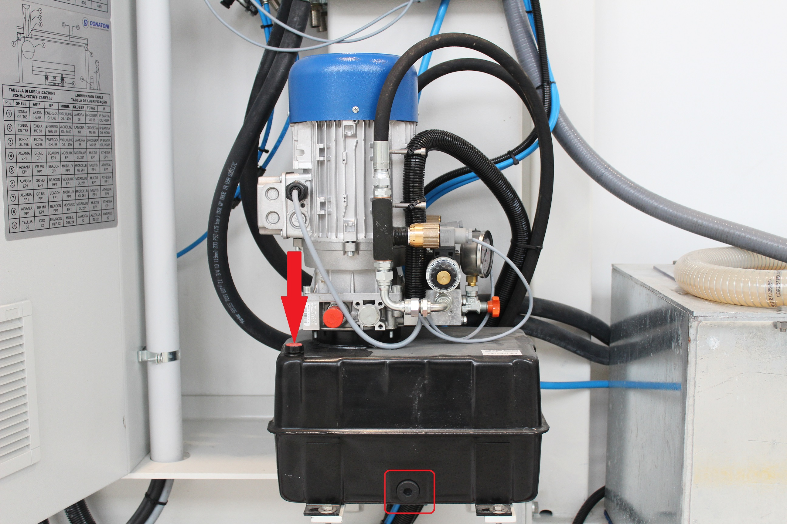
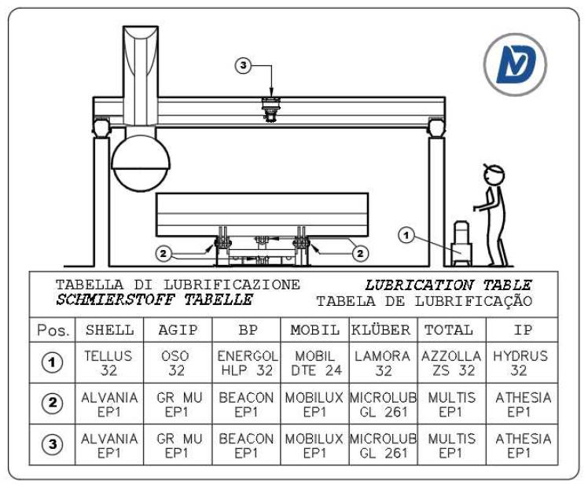

PE0006 Bench pump thermal active
Explanation of the error
Anomaly on the bench lifting system, it offers protection on the system against both short circuits and overloads.
To reset the switch, move the selector to 0 and then to 1.


Possible causes
The causes can be divided into Mechanical or Electrical problems
Mechanical problems:
- Oil pump motor blocked.
You can try to start the bench pump and see if it actually turns.
In case of complete blockage, change the oil pump; - The oil inside the tank is insufficient;
- The oil inside the tank is very dirty or the filter is dirty;
- Folding bench blocked
Electrical problems:
- Short circuit between motor phases;
- Missing a phase;
- Motor windings short circuit;
- Faulty switch
Possible solutions
The following photos show the pump with the relevant points of interest marked;


MECHANICAL
First check that the engine cooling fan turns freely, for exemple try with a screwdriver to move the fan.
Iif the fan is blocked, the pump must be changed.Check the oil level with a clean stick, and check for deposits at the bottom:
- If the level is low, top up with 32 density oil and check periodically if the system empties again as there could be leaks;
- If there is a lot of dirt, empty the tank (there is a cap in the tank) and clean it with diesel and then fill it;
- Check whether the piston joints and the bench joints are not blocked and then grease the relevant points.
ELECTRICAL → The help of a Donatoni electrician or technician present on site is recommended
- Check that there is no continuity between the various phases; disconnect the cable from the pump's electrical box, isolate the terminals and reset the switch activate the oil pump if it trips the problem could be the cable;
- Measure the input voltage with a multimeter and check the presence of all the phases; for example, if a phase is missing, check that all the terminals are tight;
- If carrying out the test in point 1 the switch does not trip, connect the cable to the pump.
If the switch trips when starting the pump, the problem is the pump and therefore it will need to be replaced;